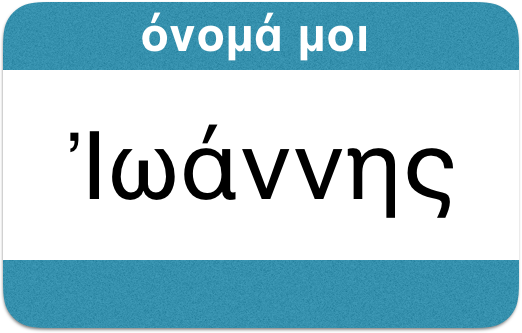
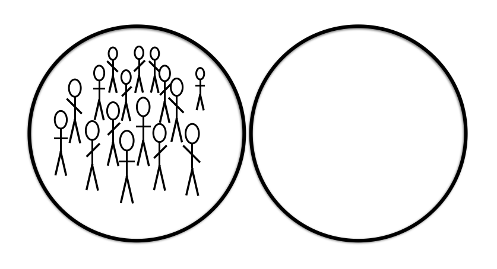

γραφὴ ζῶσα
Living Language in the Written Text
Lesson 4

Copyright 2017 by Jonathan Robie (@bibhumanities) and Micheal Palmer (@grklinguist).
This work is licensed under a Creative Commons Attribution-ShareAlike 4.0 International License.
Γλῶσσα Ἑλληνικκή
Language Objectives
In this lession you will:
- Review forms you have used in earlier lessons.
- Learn to use the forms τίνι, αὐτῷ, αὐτῇ, and nouns with similar endings.
- Learn a new way to introduce people.
| Yes, no: | 👍 ναί, 👎 οὔ. |
| Tone of voice: | ἐν ἀρχῇ ἦν ὁ λόγος; ναί, ἐν ἀρχῇ ἦν ὁ λόγος. |
| Or: | ναὶ ἢ οὔ; |
| Who, whose, whom? | 👫 τίς; διὰ τίνος; ἐν τίνι; πρὸς τίνα; |
| What? | 📦 τί; διὰ τίνος; ἐν τίνι; πρὸς τί; |
| When? | 🕝 πότε; |
| Where? (new!) | 🌍 ποῦ; |
ὄνομα αὐτῷ Ἰωάννης
τίς; ... ὄνομα τίνι;
👨 ὄνομα αὐτῷ
👩 ὄνομα αὐτῇ
👨 αὐτός Ἰώαννης ἐστιν
...
ὄνομα αὐτῷ Ἰώαννης.
👩 αὐτή Μαρία ἐστιν
...
ὄνομα αὐτῇ Μαρία.
τίς; ... ὄνομα τίνι;
ἐγώ ... ὄνομά μοι
σύ ... ὄνομά σοι
αὐτός ... ὄνομά αὐτῷ
αὐτή ... ὄνομα αὐτῇ
ὄνομα τίνι; ... τίς;
ὄνομά μοι ... ἐγώ
ὄνομά σοι ... σύ
ὄνομα αὐτῷ ... αὐτός
ὄνομα αὐτῇ ... αὐτή
τίνος ὄνομα;
... τίνι ὄνομα;
τὸ ὄνομά μου ... ὄνομά μοι
τὸ ὄνομά σου ... ὄνομά σοι
τὸ ὄνομα αὐτοῦ ... ὄνομα αὐτῷ
τὸ ὄνομα αὐτῆς ... ὄνομα αὐτῇ
τίνος ὄνομα;
... τίνι ὄνομα;
ὄνομά μοι ... τὸ ὄνομά μου
ὄνομά σοι ... τὸ ὄνομά σου
ὄνομα αὐτῷ ... τὸ ὄνομα αὐτοῦ
ὄνομα αὐτῇ ... τὸ ὄνομα αὐτῆς
ἐν τίνι;
Ἐν ἀρχῇ ἦν ὁ λόγος
👩 ἡ ἀρχή ... ἐν τῇ ἀρχῇ ... ἐν αὐτῇ
τὸ φῶς ἐν τῇ σκοτίᾳ φαίνει
👩 ἡ σκοτία ... ἐν τῇ σκοτίᾳ ... ἐν αὐτῇ
ἐν τίνι;
ὃ γέγονεν ἐν αὐτῷ ζωὴ ἦν
👨 ὁ λόγος ... ἐν τῷ λόγῳ ... ἐν αὐτῷ
👩 ἡ ἀρχή ... ἐν τῇ ἀρχῇ ... ἐν αὐτῇ
ἐν τίνι;
ἐν τῷ φωτί
📦 τὸ φῶς ... ἐν τῷ φωτί ... ἐν αὐτῷ
ἐν τίνι;
👨 ὁ λόγος ... ἐν τῷ λόγῳ ... ἐν αὐτῷ
📦 τὸ φῶς ... ἐν τῷ φωτί ... ἐν αὐτῷ
👩 ἡ ἀρχή ... ἐν τῇ ἀρχῇ ... ἐν αὐτῇ
ἐγώ, σύ
| nominative | genitive | dative | accusative |
| τίς; | διὰ τίνος; | ἐν τίνι; | πρὸς τίνα; |
|---|---|---|---|
| τί; | διὰ τίνος; | ἐν τίνι; | πρὸς τί; |
| ἐγώ | μου | μοι | με |
| σύ | σου | σοι | σε |
ὁ λόγος
| nominative | genitive | dative | accusative |
| τίς; | διὰ τίνος; | ἐν τίνι; | πρὸς τίνα; |
|---|---|---|---|
| τί; | διὰ τίνος; | ἐν τίνι; | πρὸς τί; |
| ὁ λόγος | τοῦ λόγου | τῷ λόγῳ | τὸν λόγον |
| αὐτός | αὐτοῦ | αὐτῷ | αὐτὸν |
τὸ φῶς
| nominative | genitive | dative | accusative |
| τίς; | διὰ τίνος; | ἐν τίνι; | πρὸς τίνα; |
|---|---|---|---|
| τί; | διὰ τίνος; | ἐν τίνι; | πρὸς τί; |
| τὸ φῶς | τοῦ φωτός | τῷ φωτί | τὸ φῶς |
| αὐτό | αὐτοῦ | αὐτῷ | αὐτό |
ἡ ἀρχή
| nominative | genitive | dative | accusative |
| τίς; | διὰ τίνος; | ἐν τίνι; | πρὸς τίνα; |
|---|---|---|---|
| τί; | διὰ τίνος; | ἐν τίνι; | πρὸς τί; |
| ἡ ἀρχή | τῆς ἀρχῆς | τῇ ἀρχῇ | τήν ἀρχήν |
| αὐτή | αὐτῆς | αὐτῇ | αὐτήν |
κατὰ Ἰωάννην 1:6-7
Ἐγένετο ἄνθρωπος
ἀπεσταλμένος παρὰ θεοῦ,
ὄνομα αὐτῷ Ἰωάννης·
οὗτος ἦλθεν εἰς μαρτυρίαν,
ἵνα μαρτυρήσῃ περὶ τοῦ φωτός,
ἵνα πάντες πιστεύσωσιν δι’ αὐτοῦ.
Ἐγένετο ἄνθρωπος
ἀπεσταλμένος παρὰ θεοῦ,
ὄνομα αὐτῷ Ἰωάννης·
Ἐγένετο ἄνθρωπος ἀπεσταλμένος παρὰ θεοῦ, ὄνομα αὐτῷ Ἰωάννης·
Ἐγένετο ἄνθρωπος
Ἐγένετο ἄνθρωπος ἀπεσταλμένος παρὰ θεοῦ, ὄνομα αὐτῷ Ἰωάννης·
ἀπεσταλμένος παρὰ θεοῦ
ἀπεσταλμένος
παρὰ θεοῦ
ἄνθρωπος ἀπεσταλμένος
παρὰ θεοῦ

Ἐγένετο ἄνθρωπος ἀπεσταλμένος παρὰ θεοῦ, ὄνομα αὐτῷ Ἰωάννης·
ὄνομα αὐτῷ Ἰωάννης
ὄνομα αὐτῷ Ἰωάννης
τί ὄνομά σοι;
ὄνομά μοι Ἰωνάθαν.
τί ὄνομά σοι;
Παῦλος; Ἰώαννης; Μάρθα; Μαρία; Μίχαηλ;
Ἐγένετο ἄνθρωπος ἀπεσταλμένος παρὰ θεοῦ,
ὄνομα αὐτῷ Ἰωάννης·
Ἐγένετο ἄνθρωπος ἀπεσταλμένος παρὰ θεοῦ,
ὄνομα αὐτῷ Ἰωάννης·
Ἐγένετο ἄνθρωπος ἀπεσταλμένος παρὰ θεοῦ,
ὄνομα αὐτῷ Ἰωάννης·
Ἐγένετο ἄνθρωπος ἀπεσταλμένος παρὰ θεοῦ,
ὄνομα αὐτῷ Ἰωάννης·
τίς ἐγένετο;
τί ὄνομα αὐτῷ;
παρὰ τίνος
ἦν Ἰωάννης ἀπεσταλμένος;
τίς ἀπέστειλεν Ἰωάννην;
Ἐγένετο ἄνθρωπος
ἀπεσταλμένος παρὰ θεοῦ,
ὄνομα αὐτῷ Ἰωάννης·
οὗτος ἦλθεν εἰς μαρτυρίαν,
ἵνα μαρτυρήσῃ περὶ τοῦ φωτός,
οὗτος ἦλθεν εἰς μαρτυρίαν, ἵνα μαρτυρήσῃ περὶ τοῦ φωτός,
οὗτος ἦλθεν
οὗτος ἦλθεν
- ἔρχου!!!
- οὗτος ἦλθεν.
- αὕτη ἦλθεν.
- ἐκεῖνος οὐκ ἦλθεν.
- ἐκείνη οὐκ ἦλθεν.
οὗτος ἦλθεν εἰς μαρτυρίαν, ἵνα μαρτυρήσῃ περὶ τοῦ φωτός,
ἦλθεν εἰς μαρτυρίαν
ἦλθεν εἰς μαρτυρίαν
ὁ μάρτυς - the witness
μαρτυρεῖν - to witness
ἡ μαρτυρία - testimony, evidence
μαρτυρεῖ ὁ μάρτυς.
τίς μαρτυρεῖ;
ἦλθεν ὁ μάρτυς εἰς μαρτυρίαν.
εἰς τίνα ἦλθεν ὁ μάρτυς;
οὗτος ἦλθεν εἰς μαρτυρίαν, ἵνα μαρτυρήσῃ περὶ τοῦ φωτός,
ἵνα μαρτυρήσῃ
περὶ τοῦ φωτός
ἵνα μαρτυρήσῃ περὶ τοῦ φωτός
περὶ τίνος μαρτυρεῖ ὁ μάρτυς;
οὗτος ἦλθεν εἰς μαρτυρίαν, ἵνα μαρτυρήσῃ περὶ τοῦ φωτός
🤔 διὰ τί; — why?
διὰ τί ἦλθεν ὁ μάρτυς;
Ἐγένετο ἄνθρωπος
ἀπεσταλμένος παρὰ θεοῦ,
ὄνομα αὐτῷ Ἰωάννης·
οὗτος ἦλθεν εἰς μαρτυρίαν,
ἵνα μαρτυρήσῃ περὶ τοῦ φωτός,
ἵνα πάντες πιστεύσωσιν δι’ αὐτοῦ.
ἵνα πάντες πιστεύσωσιν δι’ αὐτοῦ
πάντες
πάντες
ἵνα πάντες πιστεύσωσιν δι’ αὐτοῦ
πιστεύσωσιν
αὐτὸς πιστεύει εἰς αὐτόν
αὐτὴ πιστεύει εἰς αὐτόν
αὐτὴ πιστεύει εἰς αὐτήν
πάντες πιστεύωσιν
πιστεύ-ειν
πάντες πιστεύ-ωσιν
ἵνα πάντες πιστεύ-σ-ωσιν
ἵνα πάντες πιστεύ-σ-ωσιν δι’ Ἰωάννου.
ἵνα πάντες πιστεύ-σ-ωσιν δι’ αὐτοῦ.
κατέλαβες;
Ἐν ἀρχῇ ἦν ὁ λόγος,
καὶ ὁ λόγος ἦν πρὸς τὸν θεόν,
καὶ θεὸς ἦν ὁ λόγος.
οὗτος ἦν ἐν ἀρχῇ πρὸς τὸν θεόν.
πάντα δι’ αὐτοῦ ἐγένετο,
καὶ χωρὶς αὐτοῦ ἐγένετο οὐδὲ ἕν.
ὃ γέγονεν ἐν αὐτῷ ζωὴ ἦν,
καὶ ἡ ζωὴ ἦν τὸ φῶς τῶν ἀνθρώπων·
καὶ τὸ φῶς ἐν τῇ σκοτίᾳ φαίνει,
καὶ ἡ σκοτία αὐτὸ οὐ κατέλαβεν.
ὃ γέγονεν ἐν αὐτῷ ζωὴ ἦν,
καὶ ἡ ζωὴ ἦν τὸ φῶς τῶν ἀνθρώπων·
Ἐγένετο ἄνθρωπος
ἀπεσταλμένος παρὰ θεοῦ,
ὄνομα αὐτῷ Ἰωάννης·
οὗτος ἦλθεν εἰς μαρτυρίαν,
ἵνα μαρτυρήσῃ περὶ τοῦ φωτός,
ἵνα πάντες πιστεύσωσιν δι’ αὐτοῦ.
👨 αὐτός, 👩 αὐτή
τίς ἐι;
👨 αὐτ__ Παῦλος ἐι.
👩 αὐτ__ Κυνθία ἐι.
👩 αὐτ__ Μάρθα ἐι.
👨 αὐτ__ Ἰώαννης ἐι.
👨 εἰς αὐτόν,
👩 εἰς αὐτήν
👨 αὐτ__ πιστεύει
εἰς αὐτ__ 👨
👩 αὐτ__ πιστεύει
εἰς αὐτ__ 👨
👩 αὐτ__ πιστεύει
εἰς αὐτ__ 👩
ἐγώ, σύ
| nominative | genitive | dative | accusative |
| τίς; | διὰ τίνος; | ἐν τίνι; | πρὸς τίνα; |
|---|---|---|---|
| τί; | διὰ τίνος; | ἐν τίνι; | πρὸς τί; |
| ἐγώ | μου | μοι | με |
| σύ | σου | σοι | σε |
ὁ λόγος
| nominative | genitive | dative | accusative |
| τίς; | διὰ τίνος; | ἐν τίνι; | πρὸς τίνα; |
|---|---|---|---|
| τί; | διὰ τίνος; | ἐν τίνι; | πρὸς τί; |
| ὁ λόγος | τοῦ λόγου | τῷ λόγῳ | τὸν λόγον |
| αὐτός | αὐτοῦ | αὐτῷ | αὐτὸν |
τὸ φῶς
| nominative | genitive | dative | accusative |
| τίς; | διὰ τίνος; | ἐν τίνι; | πρὸς τίνα; |
|---|---|---|---|
| τί; | διὰ τίνος; | ἐν τίνι; | πρὸς τί; |
| τὸ φῶς | τοῦ φωτός | τῷ φωτί | τὸ φῶς |
| αὐτό | αὐτοῦ | αὐτῷ | αὐτό |
ἡ ἀρχή
| nominative | genitive | dative | accusative |
| τίς; | διὰ τίνος; | ἐν τίνι; | πρὸς τίνα; |
|---|---|---|---|
| τί; | διὰ τίνος; | ἐν τίνι; | πρὸς τί; |
| ἡ ἀρχή | τῆς ἀρχῆς | τῇ ἀρχῇ | τήν ἀρχήν |
| αὐτή | αὐτῆς | αὐτῇ | αὐτήν |